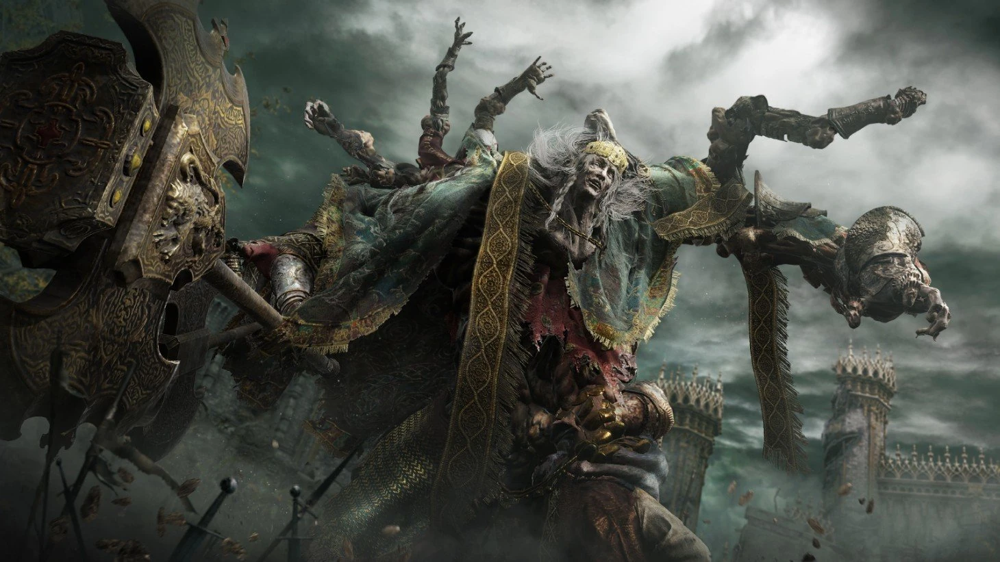

On this page there will be information on the main bosses of Elden Ring
Boss Information
Godrick the Grafted
Godrick the Grafted is the first main boss that you should fight. Godrick is located at the end of Stormveil Castle near the Secluded Cell site of grace. Stormveil Castle is a legacy dungeon.
Godrick is strong against holy damge and weak to, standard, slash, strike and pierce damage, Godrick has 6,080 HP. Godrick drops 20,000 runes, Godrick's Great Rune, Remembrance of the Grafted
The Remembrance of the Grafted can be used to make the Axe of Godrick or the Grafted Dragon. The remembrance can also be used to gane 20,000 runes

Rennala Queen of the Full Moon